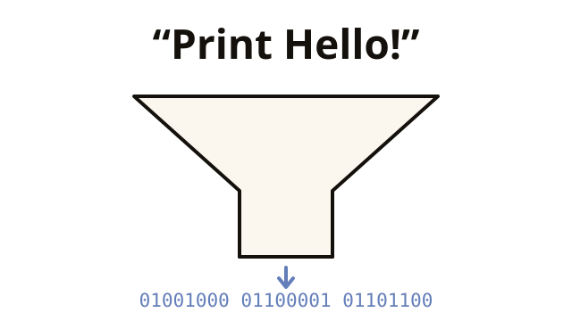

Good news: The computer decides nothing on its own, so it is predictable: every error has a cause that can be found. That makes programming learnable.
Chapter 1 of 11 · Compiler, interpreter, JVM
What is programming, anyway?
A computer performs billions of steps per second and decides nothing on its own. This chapter clarifies what that means for you.
THE PROBLEM
You write text. Your processor only understands zeros and ones. How does that fit together?
HelloWorld.java
System.out.println("Hello!");10111000 01001000 01100001 01101100 …
The processor only executes machine code, instructions made of zeros and ones. So someone has to translate between your text and the processor. But who, and when?
- You write
HelloWorld.java, readable text. - The compiler
javactranslates it into bytecode:HelloWorld.class. - The JVM runs the bytecode and translates it into your processor's machine code as it goes.
Compiler, bytecode, JVM: this chapter shows what is behind them and why Java works this way.

After this chapter you can
- explain what a program actually is
- explain the difference between compiler and interpreter (with a mental picture)
- say what makes Java special and why it is so strict about data types
- tell syntax, runtime, and logic errors apart and say who finds them
1.1 Programs: instructions for the computer
A computer performs billions of calculation steps per second, but decides nothing on its own. It needs an instruction for everything. Really everything.
Remember this
A program is a list of instructions that the computer works through stubbornly from top to bottom. Like a cooking recipe, except the cook crashes at “a pinch of salt”: “pinch” is not precisely defined.
1.2 Compiler and interpreter
The processor only understands machine code: zeros and ones. Humans are surprisingly bad at that. That is why there are programming languages: readable for humans, translatable into machine code.
The same instruction “print Hello!” on three levels:
Java (high-level language)
System.out.println("Hello!");Readable. Typeable. Learnable.
Python (high-level language)
print("Hello!")Different language, same idea.
Machine code
10111000 01001000 01100001
10111011 00000100 11001101
10000000 11000011 00binary
mush without end …The processor executes this directly.
There are two strategies for the translation from top to bottom:
- Compiler: translates the complete program beforehand into machine code. Like a book translator: once the book is translated, everyone reads it lightning fast.
- Interpreter: translates line by line, while the program runs. Like a live interpreter: ready to go right away, but there is work again with every sentence.
| Compiler | Interpreter | |
|---|---|---|
| translates … | beforehand, completely | live, line by line |
| starts … | only after the translation | immediately |
| Execution is … | lightning fast | slower (every line costs) |
Remember this
The compiler translates the whole program beforehand, the interpreter translates line by line while the program runs.
1.3 Bytecode and Java Virtual Machine (JVM)
Java takes a middle path and combines both strategies. That is how the same program runs on every operating system.
- Your Java code is translated by the compiler into bytecode (an intermediate language, file extension
.class). - The JVM (Java Virtual Machine) runs this bytecode on any device: Windows, Mac, Linux, your toaster (almost).
Remember this
The bytecode stays the same, only the JVM is different for each operating system. Hence “Write once, run anywhere”: you write the program one time and run it on any system.
Level-up: What exactly is the JVM?optional
The JVM is itself a program, a “simulated computer” on your real one.
It translates frequently used bytecode into real machine code at runtime (JIT compiler, “just in time”). That is why Java programs get faster the longer they run, like you after your second coffee.
1.4 Static typing
Java is statically typed: every variable has a fixed type, and it is checked already at compile time, not just in the running program.
Languages differ in how strict they are about data types: Python and JavaScript only check in the running program. JavaScript even converts types without asking: convenient, but it often leads to errors that only show up much later.
Remember this
Java's strictness is a feature. The compiler reports type errors before the program runs at the customer's.
1.5 Kinds of errors: syntax, runtime, and logic errors
The compiler finds many errors, but not all. The three kinds of errors differ in when they show up and who notices them.
| Kind | What is broken | Who notices |
|---|---|---|
| Syntax error | A rule violation: semicolon missing, bracket still open, word misspelled. | The compiler. The program does not even start. |
| Runtime error | The rules are fine, but something impossible happens while the program runs: dividing an integer by zero, accessing a slot that does not exist. | The JVM, right in the middle of running. The program aborts. |
| Logic error | Everything runs through. Only the wrong thing comes out. | Nobody. Only you. Or, worse, the customer. |
Remember this
- The syntax error is the most harmless: it stops you before anything can happen.
- The logic error is the most expensive: neither the compiler nor the JVM finds it. Only thinking and testing help against it.

Runtime errors are called exceptions in Java. You can catch them instead of crashing: Chapter 11. The ten most common messages are in the Panic glossary.
Exercise 1.5.1: Which kind of error?
The semicolon is missing at the end of the line.
A rule violation. The program never becomes bytecode.
The interest calculator uses + instead of *.
Everything runs, everything is wrong. The most expensive kind.
The program divides an integer by zero.
Only when it runs does it turn out that this is not possible. You can catch that: Chapter 11.
That's enough for now
- Program = list of instructions, worked through stubbornly from top to bottom.
- Compiler translates everything beforehand, interpreter line by line while the program runs.
- Java does both: compiler → bytecode (
.class) → JVM. Hence “write once, run anywhere”. - Java is statically typed: the compiler checks the types already when compiling.
- Three kinds of errors: syntax (the compiler notices), runtime (JVM, program aborts), logic (only you notice).
Checkpoint
1. What is a program?
Exactly: a stubborn list of instructions. Everything “intelligent” about it was put there by a human beforehand.
2. What does a compiler do?
The compiler translates everything first, then the program runs. The interpreter translates line by line during execution.
3. Why does Java bytecode run on Windows, Mac, and Linux?
“Write once, run anywhere”: The bytecode stays the same, the JVM of each system runs it.
4. Java is statically typed. What does that mean in practice?
The compiler checks the types when compiling. That is strict, but it prevents type errors at runtime.